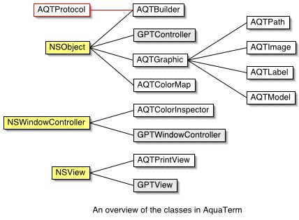

AquaTerm is made up a number of Objective-C classes as depicted here:

The greyed-out classes named GPTXxxx are old and due for a rewrite once version 0.3 of AQTProtocol.h is finalized.
The communication with the adapters are governed by the protocol in AQTProtocol.h which is a good place to start if you want to get into the writing adapters.
An UML-chart of AquaTerm is available as pdf file. I'm not very good at UML so take this with a grain of salt, anything that is correct is thanks to the wonderful program id2id and all mistakes ar my own.
(If you feel that you could improve any of this, please help out!)
View the PDF by clicking the image below.
[More to come...]